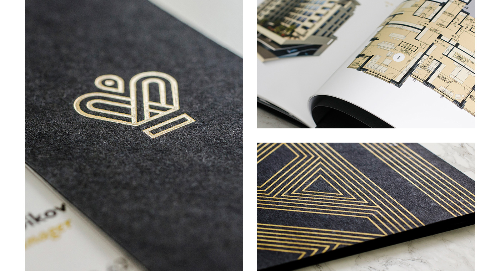
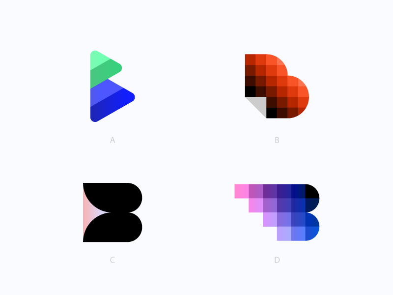
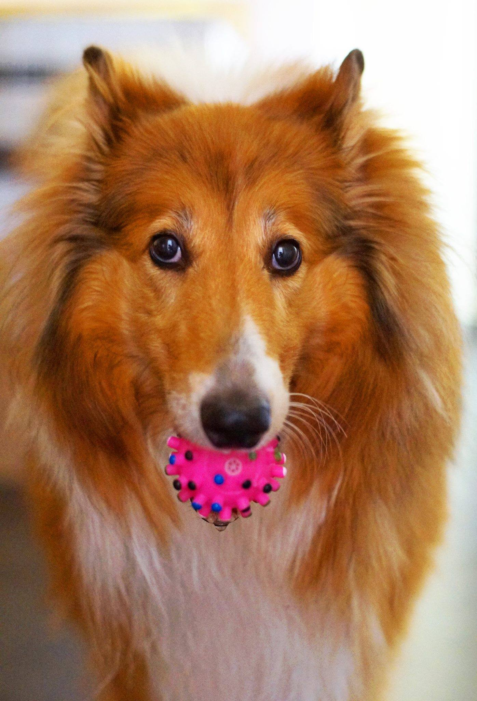
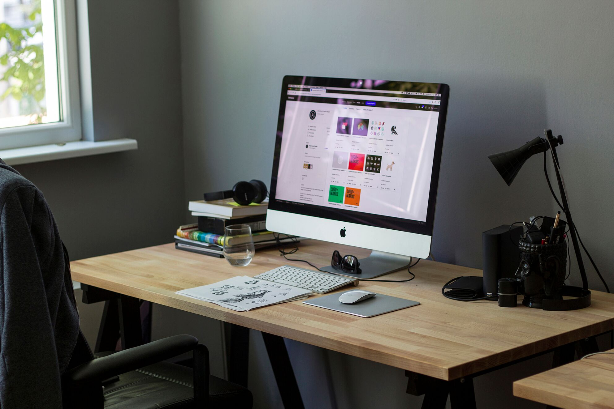
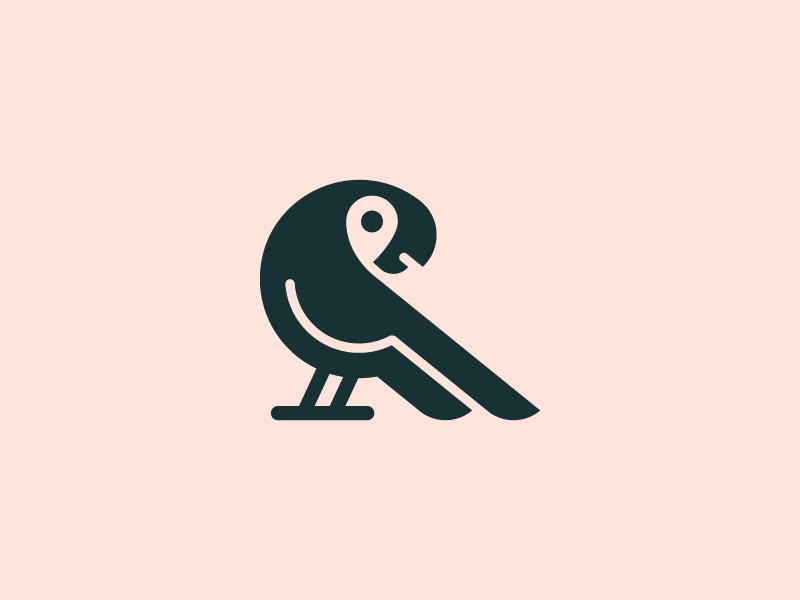

Stefan Vladimirov
Chief Creative at Swipes. Loves order and beauty. Always striving to achieve the balance between function
and aesthetics.
Branding & Logo Designer
Short intro
I`m Alexander, a Logo and Identity designer with interest in everything visual. Born and raised in Rousse. Currently work and live in Sofia.
What do you do for a living?
Making visual design. My current focus is crafting logo design and brand identities for various businesses large and small.
When did you find your passion for logo design and branding?
Somehow it came naturally for me. Graduated the Rousse high school of Fine Arts in the late 2004. Think that back then I have developed my interest for visual arts and design. Later in the university I started my first design job in small publishing house in Plovdiv. Doing mainly book covers and magazines design. After a few years I left my job and became a freelance designer and never look back :) In the early freelance days I was doing pretty much everything: from print design to illustration and websites. After a while, decided that my work should be more focused and find out my passion for logo design.
How long have you been doing your craft?
I`m doing mainly logo design and brand identities from around four years.
Describe the beginning of your day
Coffee - maybe first thing in the morning, then a short walk with our dog. Around 10:00 I get to work.
What’s your workspace?
Usually pretty messy desk. 27 inch iMac, pens and paper and Pantone color manuals.
What’s your source of inspiration?
Not really. Inspiration comes spontaneously. Everything could be inspiring with the right mindset.
What works are you most proud of?
Usually I'm too critical to my work. Going through my portfolio I feel satisfied with this parrot design. 
What are the tools you use in your day to day life?
Sketchbook, pens and inks, Illustrator + Photoshop.
Do you follow any set of principles for your work?
Be open, helpful, and do good work.
What’s your favourite movie?
Stanley Kubrick's Full Metal Jacket
What's your favourite book?
First that came to mind was Zen and the Art of Motorcycle Maintenance
What advice would you give to people that start out with logo design
Try to be open to everything. Experiment as much as you can. Great work comes after dedication and practice.
Have you ever thought of empowering your creative community in any way, shape or form?
Yes, actually a while ago we discussed this with a group of another seven Bulgarian designers. How we can help the Bulgarian design community to grow. The project is still in stealth mode until launch, but hopefully soon it will be a reality.
Meet Alex on the Social Media
DribbbleThank you for the oppurtunity, Alex. I'm really happy that I had the chance to interview you.